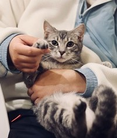
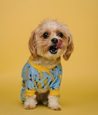

Despre noi
"Dogs have a way of finding the people who need them, filling an emptiness we don't even know we have." -Thom Jones
Asociația pentru protecția animalelor "OH MY DOG!" este o organizație non-profit, având ca scop ajutorarea animalelor fără stăpân din România, un segment social cu un mare deficit. Începând cu luna aprilie a anului 2020, odată cu înființarea primului adăpost în Feleacu și continuând cu construirea unui adăpost mai mare și cu condiții mult mai bune în Cluj-Napoca, am adăpostit, îngrijit și am dat spre adopție peste 100 de câini.
Avem în grijă câini salvați din adăposturile publice de la moartea prin eutanasiere, câini salvați de pe stradă, câini abandonați pe câmp, în păduri, câini accidentați sau maltratați. Mulți dintre acești căței au traumatisme pe viață, fizice sau psihice. Unii sunt în 3 picioare, alții mutilați, paralizați, ceea ce face ca ei să rămână rezidenți ai adăpostului pe viață, rare fiind cereri de adopție în cazul lor. La fel se întâmplă și cu cățeii bătrâni, orbi, sau nesociabili.
Cățelușii
Un pui de câine va deveni exact atât de frumos și de ”bine crescut” pe cât ești tu capabil să-l crești. La fel ca un copil, un pui sau un câine încă în creștere reprezintă o ocazie bună să îți pui la treabă capacitatea de iubire non-agresivă și de atașament. Dacă îi vei arăta dragoste chiar și atunci când greșește și îi vei corecta ferm, dar cu blândețe și îngăduință, comportamentele nedorite, te vei alege cu un câine minunat, care va ști ce-ți dorești uneori mai bine chiar și decât tine.
Internetul este în zilele noastre un loc ideal pentru a ne îmbogăți cunoștințele de ”parenting”, pentru că asta le suntem câinilor din viețile noastre, niște veritabili părinți. Așa că vă încurajăm pe toți, indiferent de vârsta cățelului pe care l-ați ales, să vă documentați din surse de încredere și încercați să deveniți în primul rând voi acei ”băieți buni” din viețile câinilor voștri.
Thor
Thor este un cățeluș relaxat, amuzant și mereu obosit. Îi place să se joace cu oricine îi iese în cale, dar apoi doarme dublul timpului în care s-a jucat. Prioritățile lui sunt măncarea și somnul. Preferă să aibă cel puțin trei mese pe zi, ceea ce face să fie o necesitate iețitul la plimbări lungi cu el pentru a-l menține sănătos.
Mâncare preferată: ABSOLUT ORCE
Cici
Cici este o cățelușă răsfățată, plină de atitudine și fostă câștigătoare de concursuri canine. Are nevoie de multă atenție: îmbrățișări, pupici și multe recpompense pentru momentele în care este ascultătoare. Îi plac băile lungi care se termină cu o masă pe cinste.
Mâncare preferată: Bobițe de la Pedigree
Fernando
Fernando este un câine serios, responsabil și cu foarte multă personalitate. Pe cât e de impunător și serios, pe atât e de iubitor și atent la nevoile oamenilor și animăluțelor din jurul lui. Îi plac plimbările prin parc și serile petrecute în casă cu un film bun și niște popcorn.
Mâncare preferată: Conservele pentru căței și popcornul
Miki
Miki este un pasionat de fotbal. Meciurile îl încântă, mai ales dacă sunt vizionate alături de cățeii favoriți și de niște mâncare. Nu este fan joacă, preferă să privească și să comenteze (lătrând) ce nu îi convine.
Mâncare preferată: Micii
Yanna
Yanna este mămica tuturor cățelușilor noștri. E atentă și grijulie, atât cu ei, cât și cu noi sau oricine altcineva îi iese în cale. Îi place să se uite la telenovele și se agită la filmele de acțiune care au ca și personaje alți căței.
Mâncare preferată: Nucile
Cookie
Cookie, după cum reiese și din numele lui, este un iubitor de dulciuri. Ai o ciocolată? Fi atent la el că ți-o fură cât ai clipi. E jucăuș și iubitor și este cel mai bun susținător în momentele grele prin care fiecare trece, asta mai ales dacă suferința implică și înghețată.
Mâncare preferată: Dulciurile
Laika
Laika este cea mai timidă cățelusă pe care o vei întâlni vreodată. Are încredere cu greu în oameni, fiind abandonată de curând de o familie iubitoare care nu a mai putut avea grijă de ea. Caută aternție și iubire necondiționată, pe care o va întoarce înzecit.
Mâncare preferată: Orice gătit cu iubire
Romică
Romică este un adevărat comediant. Giumbușlucurile pe care le face, mimica pe care o are și plânsul fals pe care îl folosește când nu primește destulă atenție te fac să îl iubești instant.
Mâncare preferată: Recompensele de la finalul ”spectacolelor” sale
Noul membru
Tomiță
Tomiță este un pisoi cuminte, timid și momentan speriat de necunoscut. A ajuns la noi deoarece familia în care s-a născut a decis că nu poate crește o a patra pisicuță și că noi îi vom putea oferi atenția și grija de care are nevoie. Așteaptă cu nerăbdare un stăpân iubitor de pisici cuminți, dar totusi jucăușe.
Mâncare preferată: Whiskas
Noul membru
Shakira
Shakira, o adevărată artistă. Felul în care se mișcă pe muzica latino fură privirile tuturor celor care o prind în aceste momente de glorie ale sale. E o cățelușă fericită, plină de viață perfectă pentru un iubitor de căței cu talent la dans.
Mâncare preferată: Salsa (cu tortillas chips dacă se poate)
Poți adopta "la distanță!"
Dacă timpul sau spațiul nu vă permit adopția fizică a unui câine, aveți opțiunea adopției la distanță. Deși situația nu e ideală, deoarece câinele respectiv ar rămâne în adăpost, o donație lunară făcută pentru un câine sau altul reprezintă un ajutor extrem de important atât pentru acel câine, cât și pentru ceilalți și pentru noi toți, oamenii de la Speranța.
Politica noastră este să vă lăsăm vouă libertatea de a decide atât perioada contractului de adopție la distanță, cât și suma pe care o veți dona regulat pentru sprijinirea câinelui vostru preferat. Nu vrem să vă simțiți constrânși, pentru că știm că presiunea și constrângerile nu fac bine în iubire, iar noi am vrea să vă oferim exact asta: o poveste de dragoste, fie ea și una de la distanță. Evident, în cazul în care vă veți hotărî să faceți marele pas de a-l lua la un moment dat acasă, veți avea prioritate în adoptarea câinelui respectiv, iar alte familii nu îl vor putea adopta fără acordul vostru prealabil.
Echipa noastră
Paula Pop
CEO
Dorește să-i motiveze pe cei din jur să ajute în scopurile pentru care ea muncește și se luptă. Vrea să îi facă pe oameni să înțeleagă care este efectul pe care abandonul animalelor îl are, să îi învețe să aibă grijă de acestea și să fie responsabili în ceea ce le privește.
PaulaPop@ohmydog.com
Corina Mihălescu
Fondatoarea ONG-ului
De mică și-a dorit să ajute. A vrut să facă parte dintr-o schimbare care să schimbe viața unor suflete nevinovate. Așa a apărut ong-ul ”Oh my dog!”, dintr-o ambițea unei mari iubitoare de animale.
Mihcorina2000@ohmydog.com
Marius Cicioiu
Îngrijitor Animale
Are trei căței și două pisicuțe acasă și cu toate astea i-ar plăcea mai multe. Așa a ajuns el în această echipă. Acum este un om de bază fără de care lucrurile nu ar fi cum sunt și fără de care cățelușii cel mai probabil ar flămânzi, el fiind cel care are grijă de alimentația lor.
MariusCicioiu@ohmydog.com
Dora Simionescu
Designer
Este pasionată de design și s-a plictisit cu câteva luni în urmă de job-ul ei, așa că la început a venit doar să ne ajute cu spațiul pe care îl avem. Treptat s-a îndrăgostit de conceptul nostru și de cățelușii de care avem grijă, așa că a rămas. Acum continuă să decoreze cușca fiecărui nou venit în funcție de personalitate și biroul nostru în funcție de sezon.
Dora1234@ohmydog.com
Sorin Marcu
Manager
A fost mereu bine organizat. Îi place contabilitatea, finanțele și statistica, așa că asta face. Are o relație de iubire și ură când vine vorba de animale, deoarece este alergic la părul acestora, dar este unul dintre cei mai implicați oameni pe care i-ai putea cunoaște vreodată.
Sorinmrc@ohmydog.com
Eduard Hara
Organizator de evenimente
Îi place să fie înconjurat de cât mai mulți oameni și și de animale. Este cel care organizează toate evenimentele ong-ului. Se ocupă de voluntari și îi caută, fiind o persoană extrovertită și cu foarte mult talent în ceea ce constă coordonarea unei echipe, atunci când vine vorba de voluntarii noștri.
haraedi1998@ohmydog.com
Devino voluntar!
Proiecte
Mulțumită donatorilor noștri, adăpostul nostru beneficiază de 2 clinici veterinare moderne și la standarde înalte dotate cu aparatură de ultimă generație. Una este destinată intervențiilor chirurgicale, dar și analizelor necesare pentru investigații medicale. Cea de-a doua clinică este destinată activităților veterinare ușoare cum ar fi „vet check lunar”, dar și activităților destinate registrelor, înregistrării câinilor în fișe, ținerea evidențelor medicale, adopțiilor, intrărilor, deceselor, etc. Avem angajat un medic veterinar și colaborări cu alți medici, în special pentru intervenții mai complicate. Ne permitem astfel să tratăm „in house“ majoritatea problemelor de sănătate ale cățeilor. Rămân însă costurile mari ale medicamentelor, dar și ale unor echipamente pentru analize și investigații care, de asemenea ne-ar prinde foarte bine, dar nu ni le permitem încă. Separat de clinici, am amenajat, în alt spațiu din adăpost și un cabinet de fizioterapie dedicat recuperării câinilor cu diverse probleme locomotorii. Cabinetul este dotat cu bazin cu bandă și cu apă. Importanța acestui loc s-a demonstrat în multe rânduri, cel mai recent cu Stafidă, care era paralizat în partea din spate, dar și-a revenit miraculos și poate astăzi să meargă, după aproximativ un an și jumătate de muncă în cabinet. De aceea avem nevoie în continuare de ajutorul și susținerea voastră!
Mâncare și jucării pentru căței
Achiziționarea hranei pentru cei peste 100 de căței găzduiți de noi și jucării pentru a le înfrumuseța viața animăluțelor noastre.
Servicii veterinare. Sterilizare și vaccinare.
Plăți către cabinetele veterinare pentru îngrijirea cățeilor salvați.Avem nevoie de fonduri pentru a preveni înmulțirea necontrolată a animalelor străzii și prevenirea posibilelor boli care i-ar putea afecta.
Adăpost
Lucrări de întreținere și mentenanță a adăpostului și produse de curățenie și igienă.
Angajați și voluntari
Costurile salariilor și impozitelor aferente pentru echipa de angajați.
Contact

ohmydogONG@ohmydog.com
Telefon

007895671234
Program

Lu - Vi / 10:00 - 16:00
Sâ - Du / 10:00 - 12:00
Adresă
Abonează-te la noi!
Completează-ți datele mai jos pentru a fi mereu la curent cu ceea ce se întâmplă în "căsuța noastră" cu noi și cu animăluțele noastre.